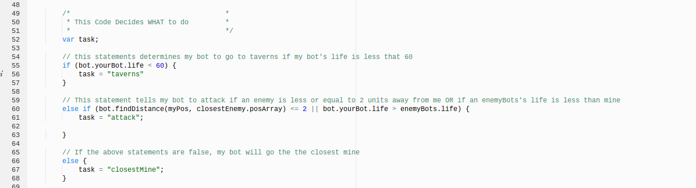
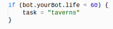
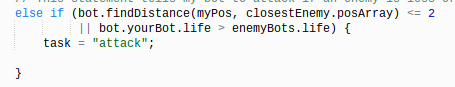
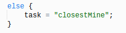

Telling Chris-bot what to do
Since we want our bot to be healthy, we need to make it the highest priority for Chris-bot to go to taverns. Using an if statement at the top of the page will create this priority because it is the first statement that the program will check to see if its true or false.
Then, for the condition, I want Chris-bot to go to taverns only when it has low health. Therefore, in the condtion I stated, Chris-bot's health (using "bot.yourBot.life") is less than (using the operator "<").
Finally, for the codeblock, we have to tell Chris-bot that it is going to go to taverns when the condition is true. To do this, we can simply set task equal to the string taverns. Now, if Chris-bot's health is less than 60, it will go to taverns, and if not, it will move onto the next statement.
Your if statement should look like this:
Attacking will take away Chris-bot's life, so we don't want Chris-bot to fight when its health is low. Thus, attacking will be our second priority to ensure that it is healthy before it fights. Therefore, we will use an else if statement instead.
To make Chris-bot a tactical player, I wanted to create a very specific condition that tells Chris-bot to attack when an enemy bot is "too close for comfort" or when an enemy bot's life is less than mine so that I have a better chance at winning.
So for the first part of my function, I found the distance between my position and the position of my closestEnemy using bot.findDistance and then will make my program check if this distance is less than or equal to 2 units--which I am considering too close for comfort. I will do this using the operator "<=".
Then, I also want to check if my life is greater than the life of my enemy. I can do this by stating bot.yourBot.life > enemyBot.life.
To separate these two different conditions I used the operator "||" meaning "either or". This will give more opportunities for Chris-bot to attack. If I were to set this condition to if both of them were true, the condition would be too specific and give Chris-bot less opportunities to attack.
Then finally, we have to set task equal to the string attack , which we will refer to later.
The final statement should look like this:
If both conditions of our if and else if statements are false , we want Chris-bot's default action to be to go and collect the mines, which will earn Chris-bot more coins to win. Because collecting the closest mine is our default action, we are going to use an else statement, which is the statement used when the prior statements to it are false. This also means that we do not a condition because it already knows that the codeblock will run when all other conditions are false.
For our codeblock, all we have to do is set our task to equal to the string closestMine, which we will refer to later.
This statement should look like this:
